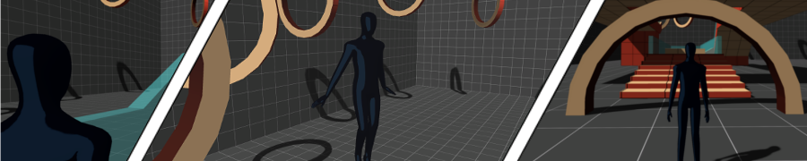
The indie game development is a trend nowadays. Recently, we can notice some of the top triple-A developers leaving their jobs, where they use to lead huge projects, to start their own game studios. Or even new talents, from best-selling indie games studios, are refusing to move to major publishers, sticking to their origins to focus on expanding and improving their indie games franchises that made them popular.
With the indie games market in such evidence, game developers have more and more tools to develop its own games nowadays. The game engines itself, responsible for making the task of game creation faster and simpler, are even more accessible, without the need of major investments. One of them in special, the Unity game engine, with triple-A quality features, offers affordable conditions for small studios, and even a free personal version. This is a perfect fit for the indie market, following its tendency to grow more and more.
The Unity creators also provide a great marketplace, the Asset Store, where it is possible to acquire several professional level packages with fair prices. Such assets can be considered one of the best allies of the indie studios, saving a lot of time and money. There are even top quality, completely free packages to consider, that leaves nothing to be desired in comparison to paid alternatives.
In this tutorial, we will learn how to start creating a 3rd person game, using a free starter kit that we can acquire in the Asset Store. The 3rd Person Controller + Fly Mode package is one of the most popular in the Asset Store, and was chosen by the editors as a must have asset , an essential one for those who are getting started with Unity and the store itself.
When we have completed this tutorial, we will have a fully functional third-person walking simulation, that can walk, jump strafe, aim, and even fly over the environment.
If you prefer an alternative version of this tutorial in video form, please click here.
To complete this tutorial, you need to have the latest version of Unity, and at least a personal free account. If you don’t have one yet, please click here to proceed to the Unity website and follow the steps to choose a plan and download the game engine.
Inside the project, the first thing we need is to add an environment to navigate in. If you have any custom scenario, you can import it right now and place it into the scene. To keep it simple, we will just setup a plane as our ground, using one of Unity’s basic 3D objects.
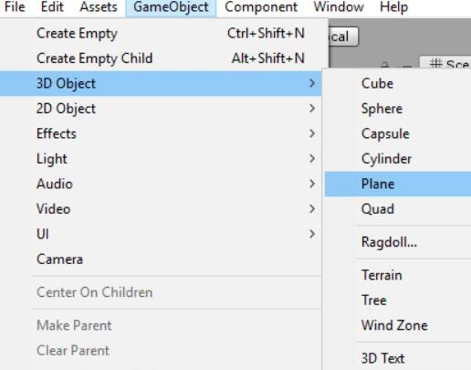
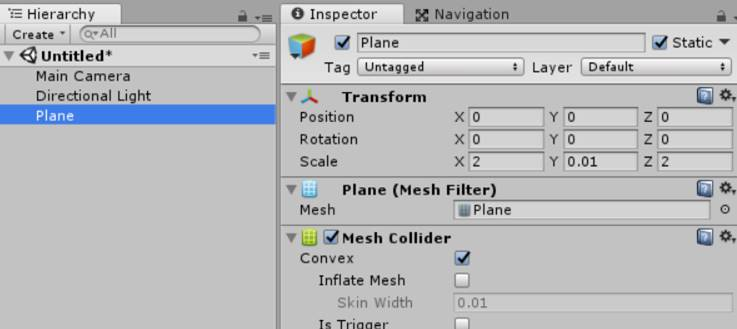
Before proceeding, we will reduce the light intensity for better scene view.
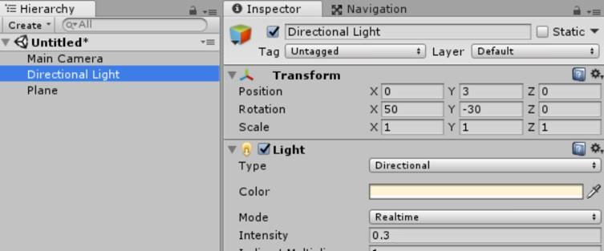
If you have not yet downloaded the package, please click on the banner above to get it:
The Import Unity Package window will appear. Since we are using just the essential assets of this package to create our own game, we don’t need to import the entire package.
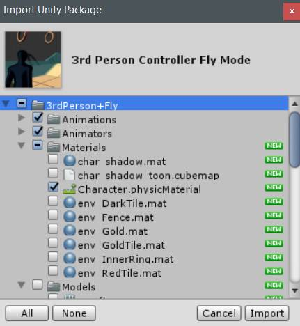
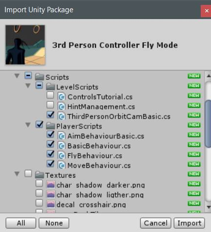
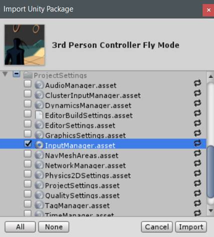
Now we can proceed to setup the player avatar. If you have any custom model, you can import it right now and place it into the scene. Note that it has to be a Mecanim humanoid compatible model. For this tutorial, we will simplify and use on of Unity’s standard assets, Ethan. Click on the banner above to get it, from the Unity Standart Assets package:
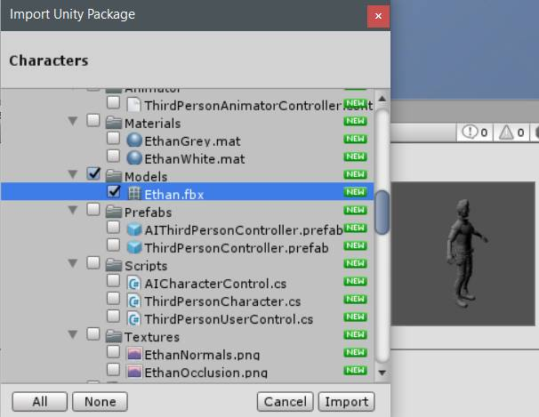
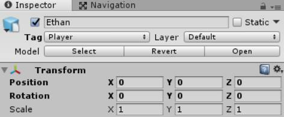
Before adding the player actions, we need to setup some components on the avatar.
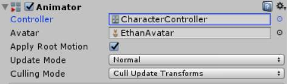
Now we need to setup the player physics components.
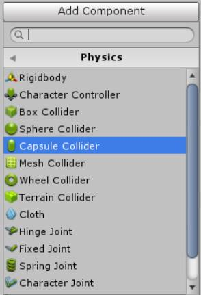
Next, we need to setup the collider so it fits the player. The following values are for the Ethan avatar.
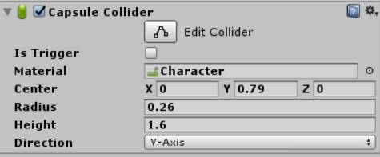
When configuring the Capsule Collider on your own character avatar, you must avoid the following situation:
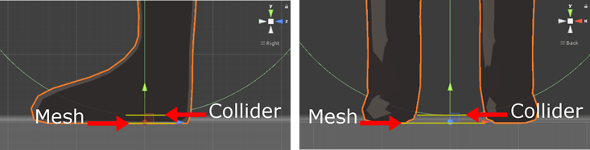
If the collider end is positioned above the mesh end, the character will get stuck when trying to move. Do not let the avatar mesh surpass the collider! The correct position is set when the bottom of the collider is at the same level or under the mesh end:
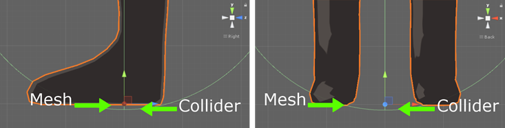
As a reference, to centralize the collider correctly, check the mesh size and use its height as the collider Height parameter. For the Center position, you may use half of the collider height minus 0.01, as the Y value of the parameter. After setting it, remember to check if the situation described above does not occur.
Now we need to add the RigidBody component to the player.
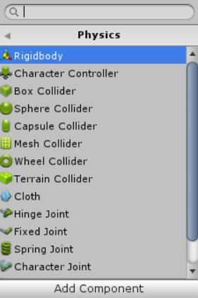
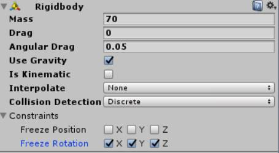
Now it’s time to setup the player actions. The player actions are defined by behaviours, each one implemented in completely independent scripts. All behaviours are controlled by a behaviour manager, that defines who is the active player action. The manager also contains common features for all behaviours. This design opens the possibility to enable or disable player actions even during runtime.
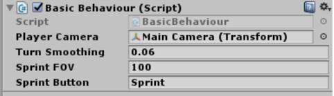
This is the script responsible for managing the player behaviours. It contains some common variables that you can play with, if you desire. Now we can start adding the custom behaviours. The first one is the Move Behaviour, responsible for player actions like walk, run, sprint, and jump. It is usually the default player behaviour.
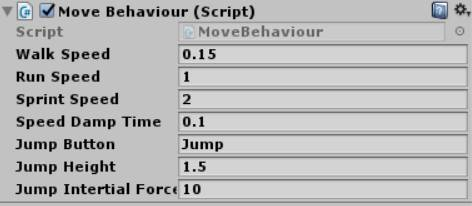
You can play with the parameters of this script if you desire. Check the README file that comes with the package for more details about each one of them. We’ll leave the default values for this tutorial. Now we will add the behaviour responsible for the strafe movement and the aiming mode.
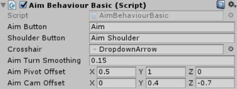
Depending on your player’s height, you may have to adjust the Aim Pivot Offset and Aim Cam Offset parameters. Remember to check the README for more information about specific parameters. Finally, we can add a custom extra behaviour, responsible for making the player avatar fly over the environment.
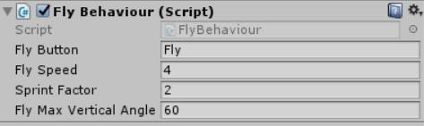
We’ll leave the parameters as is, but you can always check the README file for more information on changing this values.
The last setup we need is to set our camera as a 3rd person point of view, which will orbit around the player and follow him during his movements.
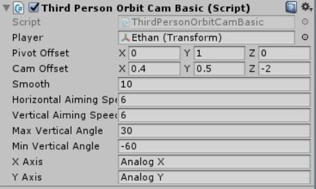
Now that we have everything ready, we can play the scene and test it. Now is a good time to save the project and the scene.
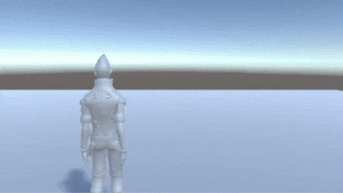
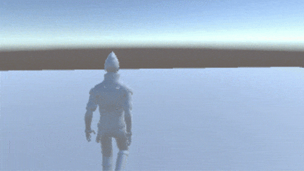
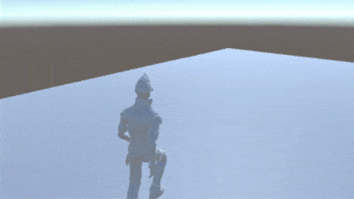
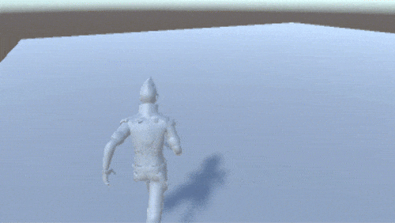
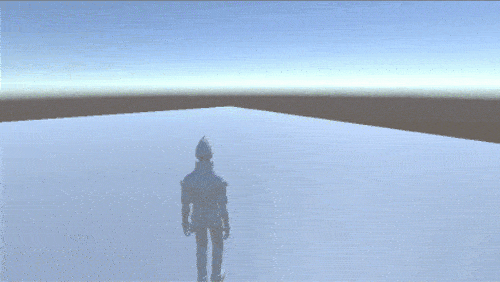
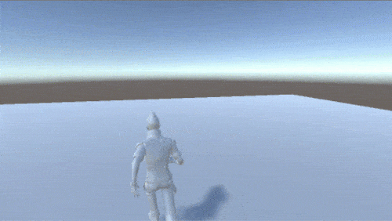
This asset features a keyboard + mouse setup input, and also comes with full Xbox One Controller support. For the complete controls scheme, you can run the demo scene that comes with the asset. Since you will need to import all the files from the package, we recommend that you start a new project and import the full asset into it. Once loaded, play the demo scene and press F2 to see the keyboard + mouse scheme, or the Xbox One Controller Menu button to view the gamepad scheme.
Now that you have basics to start with, you can try to design you own custom player actions. What about making the player swim? Or even a melee combat system?
The 3rd Person Controller + Fly Mode asset was built to make easy the task of adding new player behaviours in a completely independent manner. You can enable and disable actions during runtime, temporarily overwrite the active behaviour, and more. Take a look at the commented methods of the Basic Behaviour class, the README file, and start coding your own player behaviours right now!
If you enjoyed this package and want to know more about other custom player actions that can buy you some time and speedup the game creation process, we have a hint for you. We invite you to take a look at the Third Person Shooter Bundle asset, a complete starter kit for any third-person shooter game:
One of the included packages, the Cover + Shooting System - Third Person Shooter, comes with 2 extra behaviours, besides the basic locomotions: the cover system, with environment interactions, and a complete shooting system, with fully interactive weapons, particles and hittable targets. A time and money saver!
The other package included, the Enemy AI, contains a complete AI system with instantly configurable enemy NPCs, featuring a plug and play, expandable FSM (finite state machine). With that package, you can setup enemies in your shooter game within minutes!
And that's the conclusion for our third person walking simulation game setup tutorial. We want to thank you for getting in this journey with us!
Graduated in Computer Science, and with a master degree in Artificial Intelligence & High-Performance Computing, Vinicius Marques has started working with state of the art concepts and technologies, like Machine Learning and Parallel & Distributed Computing. These areas, in particular, later defined some actual IT trends: Big Data and Data Science.
Even working with state of the art tech, the passion for the games was never abandoned, taking an important role in his academic and personal lives. Having worked with Data Science/Big Data until recently, he defined that it was time to follow his passion and dedicate himself to what really gives him day by day motivation: creating games. Since then, he has dedicated his professional life to projects in many game related areas, such as Virtual Reality, Augmented Reality, Artificial Intelligence and Gameplay mechanics.
Click here to visit the author’s page.